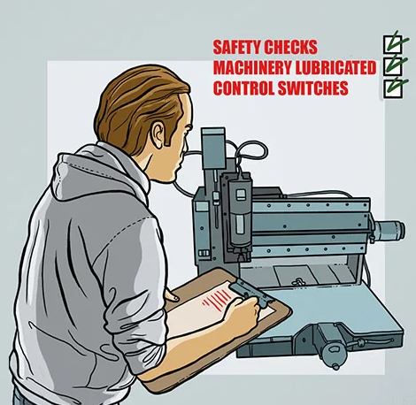

Keselamatan Am di Bengkel CNC
Dalam subjek Kemahiran Pemesinan, keselamatan adalah aspek penting untuk memastikan kelancaran kerja dan melindungi pekerja serta peralatan. Berikut adalah langkah-langkah keselamatan yang perlu dipatuhi:

- Pakaian dan Perlindungan Diri: Gunakan PPE seperti cermin mata keselamatan, kasut bertapak keras, dan sarung tangan jika perlu.
- Keadaan Bengkel: Pastikan lantai tidak licin dan alat disusun kemas untuk mengelakkan kemalangan.
- Latihan dan Pengetahuan: Pastikan semua pengguna telah menjalani latihan dan memahami manual operasi mesin CNC.
Peraturan Ketika Menggunakan Mesin CNC
- Pemeriksaan Sebelum Operasi: Periksa mesin dan pastikan bahan kerja dipasang dengan kukuh.
- Semasa Operasi: Jangan tinggalkan mesin berjalan tanpa pengawasan dan gunakan alat bantu untuk keselamatan.
- Selepas Operasi: Matikan mesin sepenuhnya, bersihkan kawasan kerja, dan simpan alat dengan selamat.

Langkah Kecemasan
- Ketahui lokasi suis kecemasan dan alat pemadam api.
- Fahami prosedur kecemasan seperti evakuasi atau kejutan elektrik.
- Sediakan kotak pertolongan cemas di bengkel.